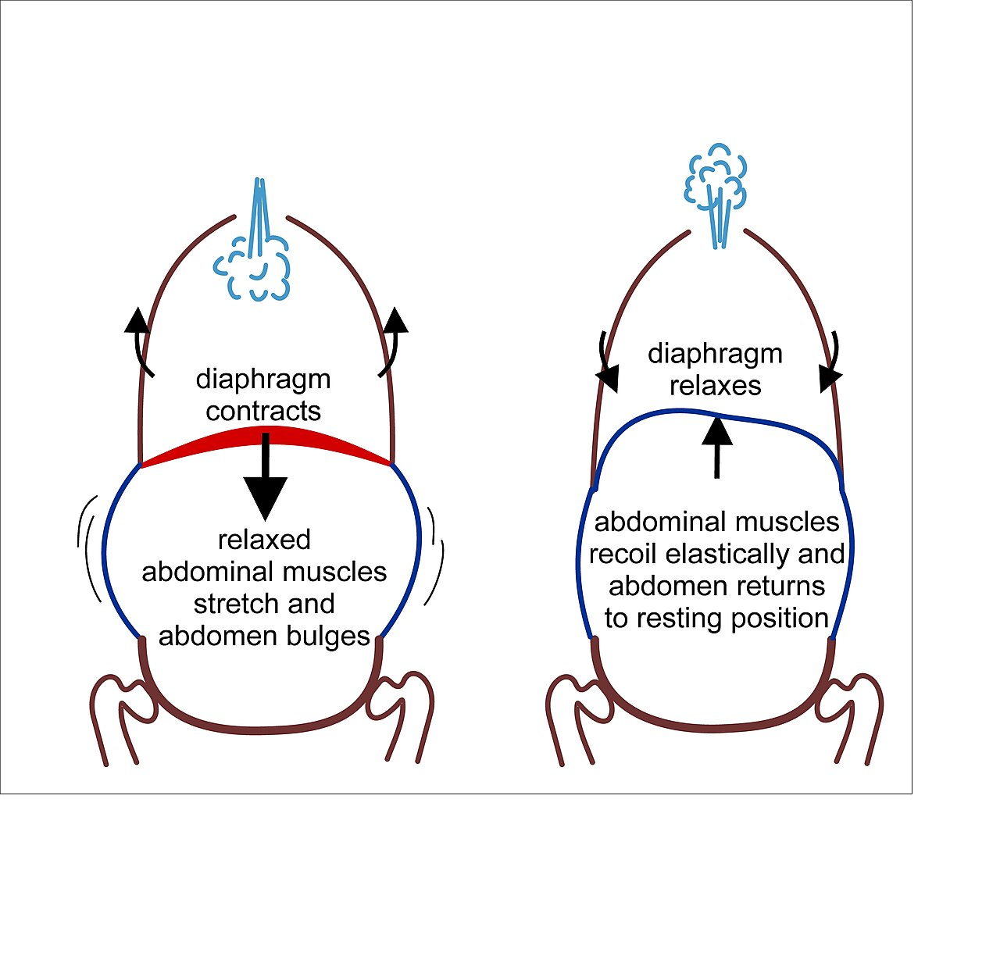

Câu Hỏi Lâm Sàng Số 1: Vì Sao Luôn Phải Tập Kegel Khi Dương Vật Ở Trạng Thái Mềm?
Khi nam giới bắt đầu chương trình phục hồi chức năng sàn chậu bài bản, câu hỏi đầu tiên mà các bác sĩ tiết niệu và chuyên gia vật lý trị liệu sàn chậu thường nhận được là: "Tôi có nên để dương vật cương cứng khi tập Kegel giống như tập tạ có kháng lực không?"
Câu trả lời y khoa là Tuyệt đối KHÔNG. Mọi buổi tập Kegel định kỳ luôn phải được thực hiện khi dương vật ở trạng thái mềm hoàn toàn (flaccid state). Có ba lý do sinh lý học cốt lõi đằng sau nguyên tắc vàng này:
- An Toàn Thủy Tĩnh Cho Hệ Mạch Máu: Khi cương cứng hoàn toàn, hai buồng vật hang (corpora cavernosa) đang chứa đầy máu động mạch dưới áp suất thủy tĩnh rất cao (
trên 100 mmHg), kéo căng lớp màng bao xơ tunica albuginea đến giới hạn đàn hồi. Việc thực hiện hàng chục nhịp co thắt tập luyện cường độ cao ép vào các buồng mạch đang đóng kín sẽ tạo ra ứng suất cơ học quá mức và gây mỏi vi mạch, thay vì giúp huy động sợi cơ vân một cách chuẩn xác. - Ngăn Ngừa Phản Xạ Có Điều Kiện Sai Lệch: Khi dương vật đang cương, các thụ thể cơ học cảm giác ở quy đầu và thân dương vật ở trạng thái cực kỳ nhạy cảm. Việc liên tục nhấp co Cơ hành hang (BC) khi đang cương sẽ vô tình "dạy" tủy sống của bạn liên kết sự căng cơ đáy chậu với việc tiến nhanh tới ngưỡng phóng tinh—đi ngược lại hoàn toàn với mục tiêu rèn luyện sức bền kiểm soát xuất tinh!
- Huy Động 100% Biên Độ Co Giãn Của Sợi Cơ (Sarcomere): Ở trạng thái mềm, cơ Hành hang, cơ Ngồi hang và cơ Mu cụt nằm ở chiều dài nghỉ tự nhiên. Điều này cho phép bạn đưa các sợi cơ đi qua 100% biên độ co hướng tâm (nâng lên) tiếp nối bằng 100% biên độ giãn tâm sai (hạ xuống hoàn toàn) mà không bị cản trở bởi sự ứ máu.

Hệ Thống Pít-tông Ngực – Chậu: Hơi Thở Quyết Định Thành Bại Của Bài Tập Kegel Như Thế Nào?
Khoang thân người của bạn tính từ lồng ngực xuống đến khung chậu hoạt động như một xi-lanh áp suất khép kín, được y học thể thao gọi là Khoang Ngực – Chậu (Thoraco-Pelvic Canister) (Hodges và cộng sự, 2007; Talasz và cộng sự, 2011). Phần mái của xi-lanh này là cơ hoành hô hấp, còn phần đáy chính là cơ hoành chậu hông (sàn chậu):
- Khi Bạn Hít Vào Qua Mũi: Cơ hoành ở ngực co lại và hạ xuống dưới về phía ổ bụng. Để cân bằng áp suất bên trong, thành bụng giãn nhẹ ra và sàn chậu tự nhiên giãn dài, hạ nhẹ xuống dưới từ 5 đến 15 mm.
- Khi Bạn Thở Ra Nhẹ Nhàng: Cơ hoành thư giãn và nâng vòm lên trên về phía lồng ngực. Đồng thời, sàn chậu tự nhiên đàn hồi nâng lên trên và rút vào trong.
Vì Sao Thói Quen Nín Thở Phá Hỏng Hiệu Quả Tập Sàn Chậu?
Hơn 60% người mới bắt đầu có phản xạ tự nhiên là nín thở khi cố gắng siết chặt cơ sàn chậu. Việc nín thở khi đóng thanh quản sẽ kích hoạt Nghiệm pháp Valsalva (Valsalva Maneuver), làm Áp lực ổ bụng (IAP) tăng vọt và đẩy toàn bộ nội tạng dồn mạnh xuống mặt sàn chậu ngay tại thời điểm bạn đang cố kéo sàn chậu đi lên! Thay vì nâng vùng đáy chậu lên, việc nín thở lại ép sàn chậu lún xuống dưới (perineal descent), làm căng giãn các dây chằng nâng đỡ và gây tăng huyết áp.
Cô Lập Thần Kinh – Cơ Chuẩn Xác so với Các Lỗi Bù Trừ Phổ Biến
Bởi vì các cơ sàn chậu nằm ẩn sâu bên trong cơ thể, não bộ thường có xu hướng "ăn gian" bằng cách huy động các nhóm cơ lớn và khỏe hơn ở xung quanh. Hãy dùng bảng đối chiếu lâm sàng dưới đây để tự kiểm tra kỹ thuật trong mỗi buổi tập:
| Yếu Tố Cơ Sinh Học | Kỹ Thuật Lâm Sàng Tối Ưu (Chuẩn) | Lỗi Bù Trừ Phổ Biến Ở Người Mới (Sai) | Hệ Quả Sinh Lý Khi Tập Sai Kỹ Thuật |
|---|---|---|---|
| Pha Hô Hấp | Thở ra êm ái khi thực hiện nhịp co nâng lên; hít vào sâu xuống khung sườn dưới trong pha thả lỏng. | Nín thở (nghiệm pháp Valsalva) hoặc thở nông ở ngực khi đang gồng cơ. | Làm tăng áp lực ổ bụng dồn thẳng xuống dưới, triệt tiêu lực nâng lên của cơ nâng hậu môn và cơ hành hang. |
| Thành Bụng (Cơ Thẳng Bụng) | Giữ mềm mại và tự nhiên; chỉ có sự đồng kích hoạt rất nhẹ của lớp cơ ngang bụng sâu. | Gồng cứng "cơ bụng 6 múi" (rectus abdominis) hoặc hóp chặt bụng vào trong. |
Làm giảm 60–70% tín hiệu điện cơ (EMG) thực sự tại cơ hành hang và gây ép bàng quang. |
| Cơ Mông & Cơ Khép Đùi Trong | Hai bên mông và đùi trong giữ tĩnh tại và thư giãn 100% trên mặt ghế hoặc thảm tập. | Siết chặt hai bờ mông (làm hông nhấc nhẹ lên) hoặc ép chặt hai đầu gối vào nhau. | Chuyển hướng xung thần kinh sang các cơ vùng hông lớn, khiến nhóm cơ đáy chậu hoàn toàn bị bỏ quên. |
| Pha Thả Lỏng & Giãn Dài Cơ | Tuân thủ tỷ lệ Nghỉ : Co tối thiểu 1:1 hoặc 2:1 (ví dụ: co 5 giây đi kèm 5–10 giây thả lỏng hoàn toàn). |
Co dồn dập từ nhịp này sang nhịp khác trong khi vẫn giữ lại 20–30% độ căng ở đáy chậu. |
Gây co thắt sàn chậu cường trương (hypertonic spasm), chèn ép thần kinh thẹn, đau tức đáy chậu và xuất tinh sớm. |
Rèn Luyện Song Song Hai Loại Sợi Cơ: Vì Sao Bạn Cần Cả "Giữ Chậm" Lẫn "Nhấp Nhanh"?
Các nghiên cứu mô học chỉ ra rằng sàn chậu nam giới được cấu tạo bởi khoảng 70% sợi cơ Nhóm I (Sợi co rút chậm ưa oxy — Slow-Twitch) và 30% sợi cơ Nhóm II (Sợi co rút nhanh đường phân — Fast-Twitch) (Dorey và cộng sự, 2004): - Sợi Cơ Nhóm I Co Chậm (Được rèn qua các nhịp Giữ Tĩnh Isometric 5–10 Giây): Đảm nhiệm việc nâng đỡ bàng quang suốt cả ngày và duy trì khả năng khóa máu tĩnh mạch bền bỉ xuyên suốt 15 đến 30 phút quan hệ mà không bị mỏi cơ. - Sợi Cơ Nhóm II Co Nhanh (Được rèn qua các nhịp Nhấp Nhanh Bùng Nổ 1 Giây — "Quick Flicks"): Phản ứng tức thì để khóa chặt niệu đạo khi áp lực tăng đột ngột (ho, hắt hơi, nhảy cao, gánh tạ nặng) và tạo các đỉnh áp lực siêu tâm thu trong vật hang nhằm củng cố độ cứng hoặc chặn đứng phản xạ xuất tinh.
Mẹo Biofeedback Trên Thiết Bị Đeo — Theo Dõi Nhịp Tim Khi Tập Kegel: Hãy mở màn hình nhịp tim trên đồng hồ thông minh trong buổi tập Kegel 5 phút của bạn. Vì các nhịp co đáy chậu cô lập chỉ tác động lên những bó cơ rất nhỏ, nhịp tim của bạn phải giữ ở mức nghỉ ngơi ổn định (hoặc dao động nhịp nhàng theo hơi thở ở tốc độ 6 nhịp thở/phút). Nếu nhịp tim trên đồng hồ vọt tăng thêm
+15 đến +25 bpmkhi bạn đang nằm tập Kegel, đó là bằng chứng rõ ràng cho thấy bạn đang nín thở và gồng cứng toàn bộ cơ bụng lẫn cơ mông!
Giao Thức Thực Hành 4 Giai Đoạn: Quy Trình Tập Kegel Cô Lập Chuẩn Y Khoa
Hãy thực hiện buổi tập thần kinh – cơ 5 phút này mỗi ngày trong không gian yên tĩnh khi dương vật hoàn toàn mềm:
- Giai Đoạn 1 — Hiệu Chuẩn Không Trọng Lực Tư Thế Nằm Ngửa (Tuần 1–2): Nằm ngửa thoải mái trên thảm, hai đầu gối gập nhẹ, kê gối dưới đầu. Tư thế nằm ngửa giúp loại bỏ hoàn toàn lực kéo của trọng lực và sức nặng của các tạng ổ bụng đè lên sàn chậu, giúp bạn cảm nhận chuyển động nâng đáy chậu dễ gấp đôi so với khi ngồi hay đứng.
- Giai Đoạn 2 — Đồng Bộ Thở Ra & Nâng Giữ Chậm (10 Nhịp Chậm):
- Hít vào chậm rãi qua mũi trong
4 giây, cảm nhận lồng ngực dưới mở rộng và vùng đáy chậu mềm ra, hạ xuống hoàn toàn (0% lực căng). - Bắt đầu thở ra nhẹ nhàng qua môi và rút gốc dương vật cùng hai tinh hoàn vào trong, hướng lên trên (70–80% sức tối đa). Giữ nguyên vị trí nâng trong5 giâytrong khi vẫn duy trì hơi thở êm. - Hít vào và chủ động thả rơi sàn chậu xuống mức thư giãn hoàn toàn trong5 đến 8 giâytrước khi bước sang nhịp tiếp theo. - Giai Đoạn 3 — Kích Hoạt Sợi Cơ Nhanh "Quick Flicks" (10 Nhịp Nhanh): Sau khi nghỉ 30 giây, thực hiện 10 nhịp co nhanh dứt khoát 1 giây (
co nhanh 1 giây → thả lỏng hoàn toàn 2 giây). Hãy tập trung tối đa vào việc buông lỏng dứt khoát giữa từng nhịp nhấp. - Giai Đoạn 4 — Tiến Triển Tư Thế Chịu Trọng Lực (Từ Tuần 3 Trở Đi): Khi bạn đã hoàn thành trọn vẹn 10 nhịp giữ chậm và 10 nhịp nhấp nhanh ở tư thế nằm mà không hề gồng bụng hay siết mông, hãy chuyển bài tập hàng ngày sang tư thế ngồi thẳng lưng (Tuần 3–4) và cuối cùng là tư thế đứng thẳng (Tuần 5+) để sàn chậu làm việc tự động chống lại trọng lực trong đời sống thực tế.
Tài Liệu Tham Khảo & Nguồn Y Khoa
- Dorey, G. (2004). Pelvic floor exercises for erectile dysfunction (Clinical Protocol & Fiber Physiology). Physiotherapy / BJU International, 96(4), 595–597. https://pubmed.ncbi.nlm.nih.gov/16011707/
- Hodges, P. W., Sapsford, R., & Pengel, L. H. (2007). Postural and respiratory functions of the pelvic floor muscles. Neurourology and Urodynamics, 26(3), 362–371. https://pubmed.ncbi.nlm.nih.gov/17304528/
- Talasz, H., Kremser, C., Kofler, M., Kalchschmid, E., Lechleitner, M., & Rudisch, A. (2011). Phase-locked parallel movement of the diaphragm and pelvic floor during breathing and coughing—a dynamic MRI investigation in healthy females and males. International Urogynecology Journal, 22(1), 61–68. https://pubmed.ncbi.nlm.nih.gov/20809211/
- Stafford, R. E., Ashton-Miller, J. A., Constantinou, C., Coughlin, G., Lutton, N. J., & Hodges, P. W. (2016). Pattern of activation of pelvic floor muscles in men differs with verbal instructions. Neurourology and Urodynamics, 35(4), 457–463. https://pubmed.ncbi.nlm.nih.gov/25727781/